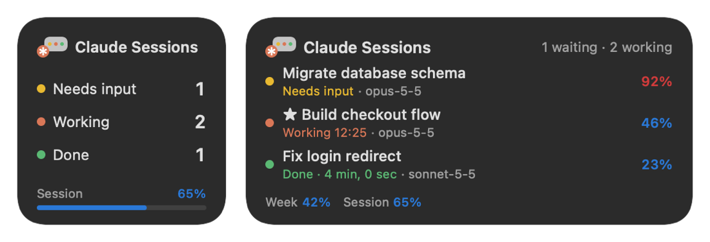

Every Claude Code session, at a glance
An always-on-top overlay for Windows and macOS that shows which Claude Code sessions are working, which need your input, how full each context window is, and how much of your usage limits is left. Click a session to jump straight to it.


Features
Live session list
Sessions that are working, waiting for input, or finished but not yet seen.
Both the CLI and the desktop app's Code tab.
★ favorites always stay.
Click to jump
Click a session to bring it to the front.
In the desktop app's split view, you land in that pane's prompt box.
Context at a glance
How much context each session has used, as a %.
100% is where auto-compact kicks in.
Usage limits
Weekly usage on the top line, the 5-hour limit on the bottom line.
Background tasks
Background subagents, shells and side sessions fold under the session that started them.
Alerts
A chime and a short voice line when a session finishes, needs input or is close to compacting.
Silent while the screen is locked or off.
Stays out of the way
Hides behind fullscreen apps and games.
Minimizes to the tray, collapses to one line, and can start with Windows or at Mac login.
Menu bar and widgets (macOS)
Session counts by state in the menu bar.
Notification Center and desktop widgets show your sessions and usage.
Dark / light, English / Korean
Switch the theme with the button at the bottom.
Pick the language by right-clicking the top line.
macOS: menu bar and widgets
Next to the ✻ icon, the menu bar shows colored counts of sessions that need input, are working or are done.
Click it for the session list, weekly and 5-hour usage, and settings; pick a session to jump to it.
Sessions in Terminal or iTerm2 jump to their exact tab.
Put the widgets in Notification Center (click the clock) or on the desktop.
They come in small (counts and the 5-hour limit), medium (three sessions), large (seven sessions with usage bars) and extra large for the desktop (counts, usage and seven sessions).
Elapsed time for working sessions keeps ticking on its own.
On macOS 26 and later you can also add a "Claude 세션" control to Control Center or the menu bar.
It shows how many sessions need input; click it to open that session.

Install
Windows
- Download
ClaudeSessionOverlay.exeand run it. It is a single file; put it anywhere you like. A zip with the README and the optional mod is on the release page. - On first launch it asks whether to start with Windows. You can change this later with Start with Windows in the tray icon's menu.
Windows SmartScreen may warn about an unsigned app the first time; choose More info → Run anyway.
macOS
macOS 11 or later (widgets need macOS 14 or later), Apple Silicon and Intel.
- Download the Apple Silicon (M1 and later) DMG or the Intel DMG.
- Open it and drag Claude Session Overlay into Applications.
- Launch it from Applications; a ✻ icon appears in the menu bar. On first launch it asks whether to open at login (change it later with Open at login in its menu).
- Widgets: right-click the desktop → Edit Widgets → search for "Claude Session Overlay".
The app is not notarized by Apple yet, so the first launch shows a warning. Open System Settings → Privacy & Security and click Open Anyway near the bottom.
Or install from Terminal in one line, which skips the warning and launches the app:
curl -fsSL https://claude-overlay.jsuk.cloud/install.sh | bashHow it works
The overlay only reads local files that Claude Code and the Claude desktop app already write. It makes no network requests and never touches your credentials.
| Data | Source |
|---|---|
| Sessions and status | ~/.claude/sessions/<pid>.json |
| Model, context tokens, background tasks | ~/.claude/projects/<project>/<session>.jsonl |
| Context window, auto-compact threshold | ~/.claude/cache/model-catalog/*.json, ~/.claude/settings.json |
| Weekly and 5-hour usage | plan-usage-history.json from the Claude desktop app |
An optional bundled Claude Code mod, session-hud, adds per-session cost, usage-limit reset times and a compact button.
FAQ
How do I see how much context a Claude Code session has used?
The overlay shows a percentage next to each session, measured against the point where Claude Code auto-compacts the conversation. Blue is under 75%, yellow under 90%, red at 90% and above.
Can I see my Claude weekly and 5-hour usage limits on Windows?
Yes. The header shows weekly usage and the footer shows the 5-hour session limit, read from the Claude desktop app's local usage history.
Does it work with both the Claude Code CLI and the desktop app?
Yes. CLI sessions in any terminal and Code-tab sessions in the Claude desktop app appear in the same list.
Is there a macOS version?
Yes. On macOS 11 and later it runs as a menu bar app, with DMGs for Apple Silicon and Intel. The menu bar shows session counts by state and the widgets show your sessions and usage. Desktop-app sessions open directly; sessions in Terminal or iTerm2 jump to their exact tab.